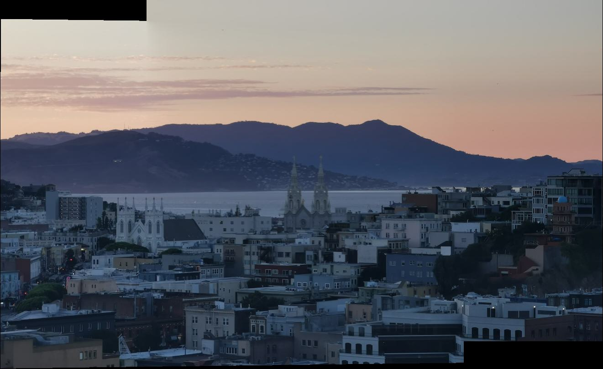

Project 4B: Feature matching for autostitching
"I dance, and my shadow flails wildly."
—Li Bai, Drinking Alone by Moonlight (Owen trans.)
Fig. 6a. sunset_1 |
Fig. 6b. sunset_2 |
|---|---|
Part 1: Detecting corner features in an image
We use the Harris interest point detector (provided implementation) to find corners in an image (Fig. 7a). We used \(\sigma=4\) for the Harris detector to obtain a reasonable density of points in the images.
We use adaptive non-maximal suppression to select a subset of the detected corners (Fig. 7b). Specifically, for each corner \(x_i\in\mathcal{H}\) detected by the Harris detector,
we compute
\[r_i=\min\left\{\{\|x_i-x_j\|_2\mid x_j\in\mathcal{H}, H[x_i] < cH[x_j]\}\cup\{\infty\}\right\}\]
as the minimum suppression radius for point \(x_i\), where \(H\) is the Harris matrix, \(\mathcal{H}\) is the set of Harris corners, and \(c\) is a robustness coefficient (we use \(c=0.9\)).
We then output the subset of \(N=500\) corners with the largest suppression radii.
Fig. 7a. Harris of sunset_1. |
Fig. 7b. ANMS of sunset_1. |
|---|---|
Part 2: Extracting a feature descriptor for each feature point
We extract axis-aligned \(40\times 40\)-pixel patches around each feature point, and downsample (with anti-aliasing) to \(8\times 8\) pixels.
\(100\) example patches for sunset_1 are shown in Fig. 8.
Fig. 8. Example patches for sunset_1. |
|---|
Part 3: Matching these feature descriptors between two images
To find potential corresponding points between two images, we compute the pairwise Euclidean distance between the feature descriptors of the two images.
To reduce outliers, we use Lowe's technique as in the paper: for each point in the first image, we find the two nearest neighbors (NN) in the set of feature points in the second image.
We then compute the ratio of the squared Euclidean distance to the first and second NNs, and only store this match if the ratio is less than a threshold
(we use \(0.2\), which was empirically found to be a reasonable threshold both in Fig. 6 in the paper and by inspecting a distribution of ratios on our images; see Fig. 9a).
Final matches obtained are shown in Fig. 9b.
Fig. 9a. 1-NN and 2-NN squared distance ratios for sunset. |
Fig. 9b. Matching points for sunset. |
|---|---|
Part 4: Use a robust method (RANSAC) to compute a homography
To compute a robust homography from the automatically detected feature matches, we use a \(4\)-point RANSAC algorithm. Specifically,
we randomly sample \(4\) pairs of feature points, compute the homography from these pairs, apply this homography to all matched points, and count the number of inliers (points where the actual match is less than \(d\) pixels away from the transformed match using this homography).
We repeat this process for \(N\) iterations, and output the maximal set of inliers. This set is then used to compute the final homography through least squares.
We use \(N=1000\) and \(d=3\) below, and obtain the corresponding points as in Fig. 10 (note that Lowe's technique already gives a reasonable set of corresponding points, so the additional filtering from RANSAC appears minimal here).
Fig. 10. Final matching points for sunset. |
|---|
Part 5: Proceed as in the first part to produce a mosaic
Using the homography computed from the automatically detected feature matches, we can proceed as in the first part to produce a mosaic (Fig. 11a-c).
| Legend | Manual | Automatic |
|---|---|---|
Fig. 11a. sf. |
||
Fig. 11b. palace. |

|
|
Fig. 11c. vatican. |
Automation enables scalability, so more examples of visually appealling image mosaics are shown below (Fig. 12 a-e).
| Legend | Automatic Mosaic |
|---|---|
Fig. 12a. Full sf. |
|
Fig. 12b. botanical-garden. |
|
Fig. 12c. canyon.(Photos by R. Sun) |
|
Fig. 12d. sunset. |
 |